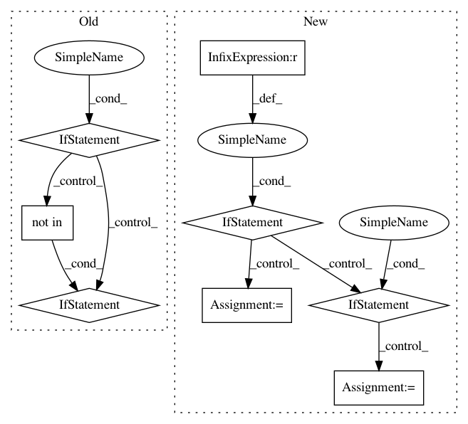

6b8fd96888fd95e82e010837439a84a3e7487336,kmodes/tests/test_common.py,,test_non_meta_estimators,#,46
Before Change
// input validation etc for non-meta estimators
estimators = all_estimators()
for name, Estimator in estimators:
if name != "kprototypes":
yield check_estimators_dtypes, name, Estimator
yield check_fit_score_takes_y, name, Estimator
// Check that all estimator yield informative messages when
// trained on empty datasets
yield check_estimators_empty_data_messages, name, Estimator
yield check_pipeline_consistency, name, Estimator
if name not in ["Imputer"]:
// Test that all estimators check their input for NaN"s and infs
yield check_estimators_nan_inf, name, Estimator
yield check_estimators_overwrite_params, name, Estimator
yield check_estimator_sparse_data, name, Estimator
After Change
// input validation etc for non-meta estimators
estimators = all_estimators()
for name, Estimator in estimators:
if name == "kmodes":
for check in _yield_all_checks(name, Estimator):
// Skip these
if check.__name__ not in ("check_clustering",
"check_dtype_object"):
yield _named_check(check, name), name, Estimator
elif name == "kprototypes":
for check in _yield_all_checks(name, Estimator):
// Only do these
if check.__name__ in ("check_estimator_sparse_data",
"check_clusterer_compute_labels_predict",
"check_estimators_partial_fit_n_features"):
yield _named_check(check, name), name, Estimator
In pattern: SUPERPATTERN
Frequency: 4
Non-data size: 8
Instances
Project Name: nicodv/kmodes
Commit Name: 6b8fd96888fd95e82e010837439a84a3e7487336
Time: 2016-10-16
Author: njdevos@gmail.com
File Name: kmodes/tests/test_common.py
Class Name:
Method Name: test_non_meta_estimators
Project Name: home-assistant/home-assistant
Commit Name: 903cda08b153400849409c253cbc8051af53a503
Time: 2018-01-08
Author: cameron.b.llewellyn@gmail.com
File Name: homeassistant/components/light/insteon_local.py
Class Name:
Method Name: setup_platform
Project Name: IBM/adversarial-robustness-toolbox
Commit Name: 1128fb5ffc00cbd22bbec0787349937b5bb7cbca
Time: 2020-08-19
Author: beat.buesser@ie.ibm.com
File Name: art/attacks/evasion/adversarial_patch/adversarial_patch_tensorflow.py
Class Name: AdversarialPatchTensorFlowV2
Method Name: __init__
Project Name: home-assistant/home-assistant
Commit Name: 903cda08b153400849409c253cbc8051af53a503
Time: 2018-01-08
Author: cameron.b.llewellyn@gmail.com
File Name: homeassistant/components/switch/insteon_local.py
Class Name:
Method Name: setup_platform